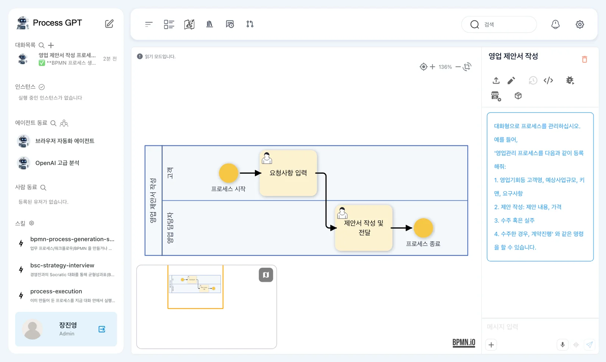
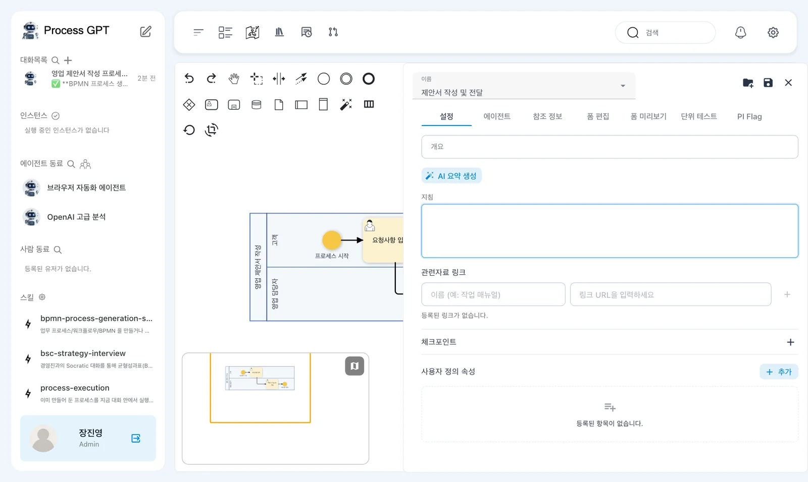
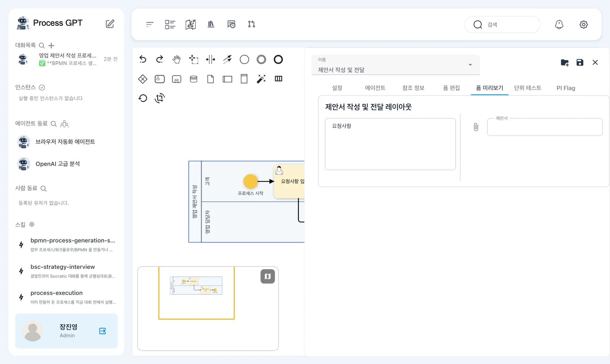
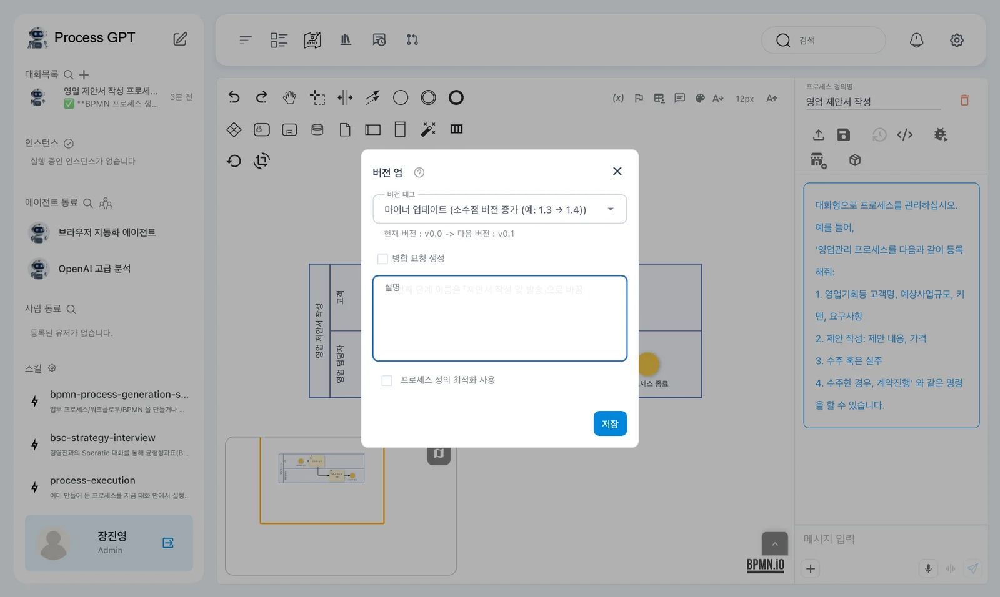
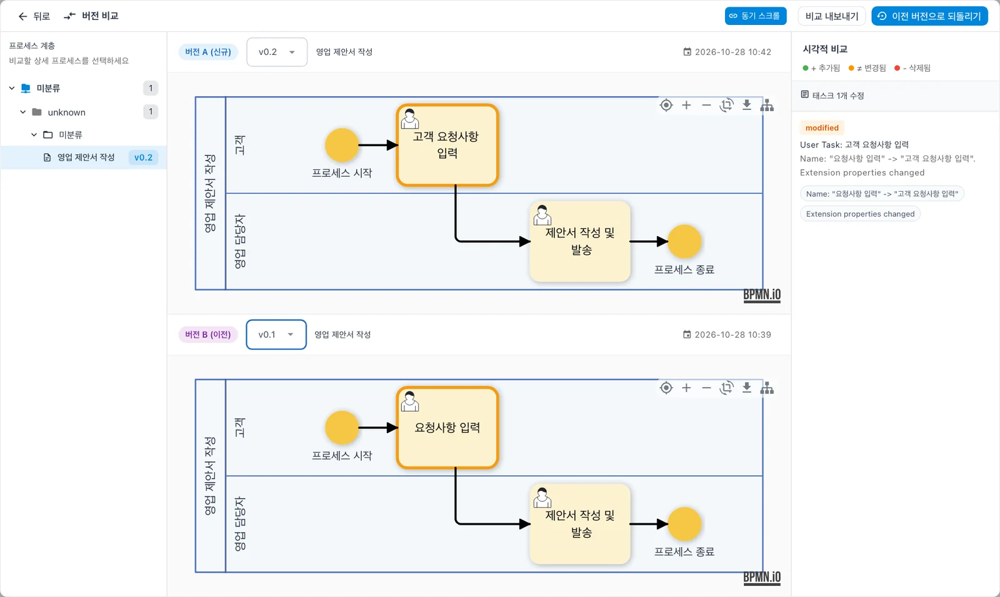

3장에서 만든 「영업 제안서 작성」 정의를 열어 BPMN 흐름도의 레인과 단계, 단계마다 붙은 폼을 살펴보고, 단계 이름을 고쳐 버전으로 저장한 뒤 두 버전을 나란히 비교합니다. 정의를 파일로 내보내는 법도 익힙니다.
정의 화면#
프로세스 정의 체계도에서 「영업 제안서 작성」을 누르면 정의가 읽기 모드로 열립니다. 가운데에 흐름도, 오른쪽 위에 정의를 다루는 아이콘이 있습니다.

흐름도의 기호는 이렇게 읽습니다.
| 기호 | 이름 | 뜻 |
|---|---|---|
| 가로로 긴 띠 | 레인 | 한 역할이 맡는 영역. 「고객」, 「영업 담당자」 |
| 동그라미 | 시작·종료 이벤트 | 프로세스의 처음과 끝 |
| 둥근 사각형(사람 모양) | 사용자 작업 | 사람이 폼을 채워 끝내는 단계 |
| 화살표 | 흐름 | 다음 단계로 넘어가는 순서 |
오른쪽 위 아이콘에 마우스를 올리면 이름이 나옵니다. 「BPMN 가져오기」, 「편집하려면 연필 아이콘을 누르세요」, 「버전 히스토리」, 「XML 보기」, 「시뮬레이션」, 「마켓플레이스 등록」, 「컴포넌트 내보내기 (.zip)」, 그리고 「프로세스 삭제」(빨간 휴지통)가 있습니다.
따라 하기 1 — 단계와 폼 보기#
- 연필 아이콘을 눌러 편집 모드로 바꿉니다. 왼쪽 위에 그리기 도구(이벤트, 게이트웨이, 작업, 레인 등)가 나타납니다.
- 흐름도의 「제안서 작성 및 전달」을 두 번 누릅니다. 오른쪽에 단계 패널이 열립니다.
- 패널의 탭을 훑어봅니다 — 「설정」, 「에이전트」, 「참조 정보」, 「폼 편집」, 「폼 미리보기」, 「단위 테스트」, 「PI Flag」.
- 「폼 미리보기」를 눌러 이 단계에서 담당자가 채울 폼을 봅니다.


폼 미리보기의 칸은 3장에서 만들어진 폼에 따라 다릅니다. 고객 요청사항·제안 내용·견적·일정·제안서 파일 첨부 다섯 칸이 보일 수도 있습니다.
「설정」 탭에는 이 단계의 개요와 지침(담당자나 에이전트가 따를 설명), 관련자료 링크, 체크포인트(끝내기 전에 확인할 항목)를 적습니다. 「에이전트」 탭에서는 이 단계를 AI 에이전트에게 맡길 수 있습니다.
따라 하기 2 — 고치고 버전으로 저장하기#
고객에게 보내는 것까지 한 단계라는 뜻이 드러나게, 두 번째 단계 이름을 바꿔 봅니다.
- 단계 패널 「설정」 탭 위의 「이름」을
제안서 작성 및 발송으로 바꿉니다. - 패널 오른쪽 위의 💾(패널 저장)를 누르고, ✕로 패널을 닫습니다.
- 정의 화면 오른쪽 위의 💾(저장)를 누릅니다. 버전 업 창이 뜹니다.
- 「버전 태그」는 「마이너 업데이트」 그대로 두고(v0.0 → v0.1), 「설명」에 무엇을 바꿨는지 적어 「저장」합니다.

정의를 다시 열면 바뀐 이름이 흐름도에 보입니다. 같은 방법으로 첫 단계 「요청사항 입력」을 고객 요청사항 입력으로 바꿔 한 번 더 저장합니다(v0.2).
패널 저장과 정의 저장
단계 패널의 💾는 그 단계의 변경을 흐름도에 반영할 뿐입니다. 오른쪽 위 💾로 정의를 저장해야 버전이 만들어집니다. 패널만 닫고 정의를 저장하지 않으면 바꾼 내용이 사라집니다.
따라 하기 3 — 두 버전 비교하기#
버전이 둘 이상 생기면 편집 모드의 「버전 히스토리」 아이콘이 켜집니다. 현재 버전에는 v0.1을 저장한 뒤에도 이 아이콘의 툴팁이 「저장된 버전이 없습니다」로 나오는 결함이 있습니다. 툴팁만으로 저장 여부를 판단하지 마세요.
- 편집 모드에서 「버전 히스토리」를 누릅니다. 버전 비교 화면이 열립니다.
- 왼쪽 「프로세스 계층」에서 「미분류」를 펼쳐 「영업 제안서 작성」을 고릅니다.
- 위쪽 「버전 A (신규)」에 v0.2, 아래쪽 「버전 B (이전)」에 v0.1을 고릅니다.

오른쪽 「시각적 비교」에는 추가됨(초록)·변경됨(주황)·삭제됨(빨강)으로 무엇이 바뀌었는지 나옵니다. 잘못 고쳤다면 위의 「이전 버전으로 되돌리기」로 돌아가고, 「비교 내보내기」로 비교 결과를 파일로 남깁니다.
프로세스 계층에 「unknown」이 보일 때
현재 버전에서는 버전 비교의 프로세스 계층에 「미분류 › unknown › 미분류 › 영업 제안서 작성」처럼 이름 없는 중간 단계가 「unknown」으로 보입니다. 끝까지 펼쳐 프로세스를 고르면 됩니다.
따라 하기 4 — 정의를 파일로 내보내기#
정의 화면의 「컴포넌트 내보내기 (.zip)」를 누르면 정의와 폼이 담긴 zip 파일이 내려받아집니다(실습에서는 …-0.2.zip, 15KB, 다시 실습했을 때는 약 17KB). 다른 Process GPT의 홈에서 「컴포넌트 가져오기」로 이 파일을 올리면 같은 프로세스가 설치됩니다. 회사 안의 다른 설치본으로 옮기거나 백업할 때 씁니다.
다음 장으로#
여기까지 사람이 하는 단계만 있는 프로세스를 만들고 다뤘습니다. 실행하고 할 일을 처리하는 장(5~7장)은 준비 중이니, 다음은 AI 에이전트 쪽으로 넘어갑니다. 먼저 에이전트가 근거로 쓸 회사 문서를 지식 베이스에 올립니다(8장).
확인 문제
- 단계 패널에서 이름을 바꾸고 패널만 닫았습니다. 정의를 다시 열면 이름이 바뀌어 있을까요?
- 버전 비교 화면에서 변경된 단계는 어떻게 표시되나요?
- 만든 프로세스를 다른 회사의 Process GPT로 옮기려면 어떻게 하나요?
답
- 아닙니다. 패널의 💾는 흐름도에만 반영합니다. 정의 화면 오른쪽 위 💾로 저장해 버전을 만들어야 남습니다.
- 흐름도에서 주황색 테두리로 강조되고, 오른쪽 「시각적 비교」에 「modified」와 바뀐 속성(이름 등)이 나옵니다.
- 정의 화면의 「컴포넌트 내보내기 (.zip)」로 파일을 받고, 옮길 곳의 홈에서 「컴포넌트 가져오기」로 올립니다.